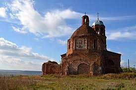

История
На берегу реки Битюг, там, где позже вырос город, в документе 1685 года упоминается Бобровский откупной юрт название связано с существованием в этом месте бобрового промысла.
В 1698 году в этом юрте возникает селение Бобровская слобода, неофициально называемое также село или даже город Бобровск.
Первоначально сюда были переселены служилые люди, потом дворцовые крестьяне из Ярославской и Костромской губерний .
В 1779 году Бобровская слобода преобразована в город Бобров, который некоторое время спустя стал административным центром Бобровского уезда.
В 1857—1863 годы в Боброве была построена и освящена Успенская церковь.
Советская власть в Боброве была установлена 30 октября 1917 года. В годы Гражданской войны Бобровский уезд был местом ожесточённых боев, часто переходил из рук в руки.
В 1918 году здесь был сформирован Бобровский полк Красной Армии.
В период Великой Отечественной войны Бобровский район являлся ближним тылом советских войск, неоднократно подвергался бомбардировкам,
в результате чего полностью или частично были разрушены вокзал, казармы дорожных мастеров,
9 промышленных зданий и кирпичный завод, 162 жилых здания, 7 школ, магазины, больницы.
После войны Бобров был восстановлен, в 1947 году открыты новый парк (на месте снесенного Никольского собора) и стадион.
В городе остался один действующий православный храм, это был Успенский храм на городском кладбище.
В начале второго тысячелетия в южной части города восстановлен Покровский храм.

1
- 3
- 4
- 5